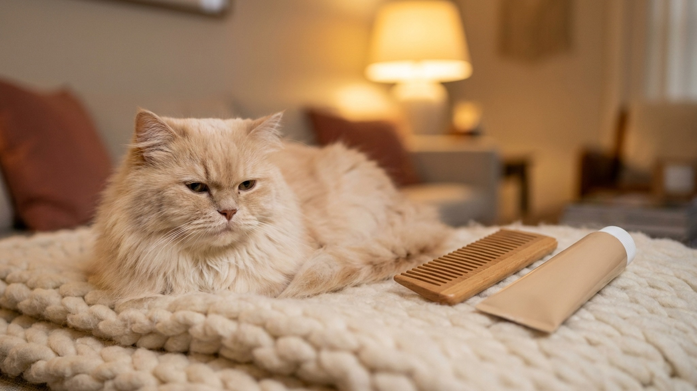

Кошки рвут. Это факт, с которым сталкивается каждый владелец. Вопрос не «рвёт или нет», а «это нормально или уже нет». Однократная рвота шерстью раз в несколько недель — физиологически объяснима. Но когда рвота становится ежедневной, содержит кровь или сопровождается потерей веса — это уже симптом болезни, а не «кошки такие». Разбираем виды рвоты, частоту нормы, красные флаги и хронические состояния, при которых рвота — лишь вершина айсберга.
Трихобезоар — спрессованный комок шерсти в желудке или кишечнике. Кошки вылизываются по 3-4 часа в день, и часть шерсти неизбежно заглатывается. Большинство проходит через ЖКТ естественно, но часть накапливается в желудке и периодически выходит со рвотой.
Внешний вид: продолговатый «колбаской» или трубочкой, покрытый слизью, часто с частицами еды. Цвет совпадает с шерстью кошки или темнее — из-за желудочного сока.
Нормальная частота: до 1-2 раз в месяц у длинношёрстных кошек, до 1 раза в 4-6 недель у короткошёрстных. Если кошка «кашляет» трихобезоар ежедневно или через день — это уже не норма, это симптом нарушения моторики ЖКТ или избыточного заглатывания шерсти на фоне стресса или кожных проблем.
Что делать: регулярное вычёсывание (2-3 раза в неделю у короткошёрстных, ежедневно у длинношёрстных), специальная трава для кошек или мальт-паста (Beaphar Malt Soft Extra, 8in1 Excel Hair-Ball Remedy) для облегчения прохождения шерсти. Если трихобезоары участились — к врачу: возможны нарушения перистальтики.
Кошка рвёт практически непереваренной едой — это тоже не одна история, а минимум три разных.
Сценарий 1 — ест слишком быстро. Содержимое выходит почти сразу после кормления (в пределах 15-30 минут), внешне почти идентично тому, что съела. Желудок просто механически не успел начать переваривание. Решение: интерактивная миска с «лабиринтом», кормление порциями, несколько маленьких приёмов пищи вместо одного большого.
Сценарий 2 — непереносимость ингредиента. Рвота без чёткой связи со скоростью еды, но регулярно после определённого корма. Часто сопровождается диареей, зудом, хроническим конъюнктивитом. В 2023 году исследование Journal of Veterinary Internal Medicine показало, что пищевая непереносимость у кошек встречается значительно чаще, чем диагностируется — основной «подозреваемый» обычно белок (курица, говядина). Решение: гидролизованный или монобелковый корм в режиме элиминационной диеты на 8-12 недель.
Сценарий 3 — рефлюкс и растянутый желудок. Кошка рвёт через 1-3 часа после еды частично переваренной массой с кислым запахом. Это уже ближе к рвоте с желчью. Корень может быть в сниженной моторике желудка, стрессе или раннем гастрите.
Характерный вид: жидкая пена от белой до жёлто-зелёной. Запах кисловатый или горький. Обычно случается рано утром или в промежутках между кормлениями — когда желудок пуст. Желчь забрасывается из двенадцатиперстной кишки в пустой желудок и раздражает слизистую.
Единичный эпизод после длительного перерыва в еде — относительно объяснимо. Регулярная желчная рвота несколько раз в неделю — симптом, который требует диагностики.
Причины хронической желчной рвоты: синдром раздражённого кишечника, ВЗК (воспалительное заболевание кишечника), триадит (одновременное воспаление поджелудочной железы, кишечника и печени), дискинезия желчевыводящих путей, паразиты.
Промежуточное решение при ночных/утренних эпизодах — небольшой перекус на ночь, чтобы желудок не был абсолютно пустым. Но это не лечение — это купирование симптома. При регулярности — к врачу.
Кровь в рвоте выглядит по-разному в зависимости от источника кровотечения.
Любая кровь в рвоте у кошки — повод для визита к врачу в день обнаружения, а при обильном кровотечении, слабости, бледных дёснах — немедленно.
Это самый частый вопрос и самый сложный ответ. Жёсткой нормы нет — всё зависит от контекста. Ориентиры, которые используют ветеринары:
Не завтра, не «понаблюдаю ещё день», а сегодня или в экстренном порядке:
Если кошка рвёт раз в несколько дней или раз в неделю, и так продолжается месяцами, а хозяин «уже привык» — это плохой сценарий. Хроническая рвота — симптом, а не диагноз.
ВЗК (воспалительное заболевание кишечника) — хроническое воспаление слизистой ЖКТ. По данным Winn Feline Foundation, ВЗК — одна из наиболее распространённых причин хронической рвоты и диареи у кошек среднего и старшего возраста. Диагностируется биопсией (эндоскопической или хирургической). Лечится — преднизолон, хлорамбуцил, специальные диеты. Без лечения прогрессирует до лимфомы кишечника.
Триадит — одновременное воспаление поджелудочной железы (панкреатит), кишечника (энтерит) и печени (холангиогепатит). Встречается именно у кошек — анатомически у них проток поджелудочной железы впадает в кишечник в одном месте с жёлчным протоком, поэтому воспаление легко перекидывается. Симптомы: вялость, рвота, снижение аппетита, иногда желтушность. Диагностируется комплексно: УЗИ, fPLI (специфическая липаза поджелудочной кошки), биохимия печени.
ХБП (хроническая болезнь почек) — по мере накопления уремических токсинов у кошки нарастает тошнота и рвота. Классическая картина: кошка рвёт утром натощак желтоватой пеной, ест плохо, много пьёт. Именно с рвоты часто начинается диагностический путь к ХБП.
Гипертиреоз — избыток тироидных гормонов ускоряет перистальтику, что вызывает рвоту и диарею на фоне повышенного аппетита и потери веса.
Несколько ошибок, которые совершают владельцы из лучших побуждений:
Чем точнее описание — тем быстрее поставят диагноз. Перед визитом к ветеринару зафиксируйте:
Хорошее описание истории болезни сокращает диагностику с нескольких визитов до одного.